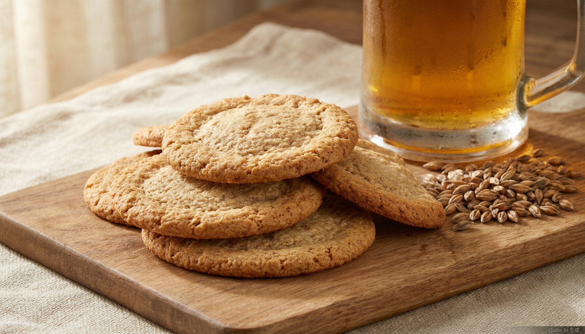
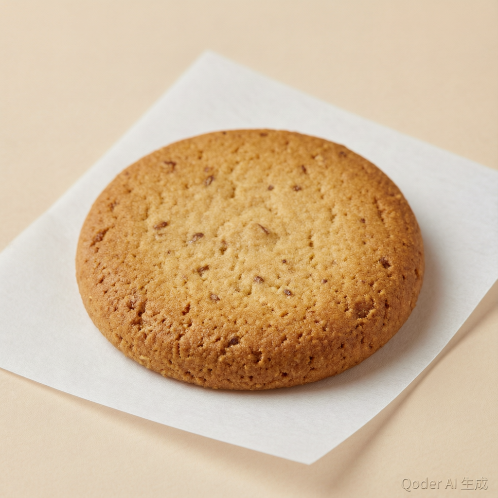

膳食纤维 · 占 50%–70%
主力是阿拉伯木聚糖（15%–25%）与纤维素（15%–25%），像一块吸水的"海绵骨架"，是平稳血糖的第一功臣。
食品科学 × 人工智能 · 科普
每喝掉 100 升啤酒，酒厂就会留下约 20 千克麦糟。 这些曾被当作饲料甚至废弃物的"啤酒渣"，其实是一座被低估的 膳食纤维宝库 —— 我们把它做成了 有助于平稳血糖的无糖饼干，还请来 AI 当"烘焙学徒"。

第一章 · 课题背景
酿啤酒就像煮一锅麦子粥：大麦芽先泡热水"糖化"，泡出甜甜的麦汁去发酵成酒， 而捞出来的那堆湿漉漉的麦壳与残渣，就是麦糟（Brewers' Spent Grain，简称 BSG）。 它相当于"榨完豆浆剩下的豆渣"——精华进了酒里，营养却大多留在了渣里。
大麦发芽后烘干，满是淀粉与营养
热水浸泡，把淀粉泡成甜甜的麦汁
麦汁发酵，成为杯中金波
被留下的麦壳与残渣——本课题的主角
巨大的麦糟体量若只作饲料或废弃，既浪费资源，又带来脱水、储运与污染难题。 而它恰恰保留了谷粒中最有价值的部分——蛋白质、膳食纤维、矿物质与酚类物质在糖化后大量留存于渣中，含量甚至高于原麦芽。
《中华人民共和国反食品浪费法》第十五条明确要求食品生产经营者"提高食品加工利用率"。 把麦糟做成饼干，正是把啤酒行业的"负资产"转化为高纤维、高蛋白的功能性食品—— 一次既合政策、又合健康、还合"双碳"目标的资源逆袭。
据国际糖尿病联盟（IDF）《糖尿病地图》第 10 版：2021 年全球 20–79 岁人群糖尿病患者已达 5.37 亿（患病率 10.5%），若不加干预，2045 年将攀升至 7.83 亿。 与药物相比，膳食调整成本低、可及性高，被各国指南置于 2 型糖尿病防治的基础位置。
大规模研究显示：膳食纤维摄入达到 25–29 g/天，全因死亡、冠心病、脑卒中与 2 型糖尿病风险可降低 15%–30%；每日纤维每增加 10 g，2 型糖尿病风险约再降 9%。 而麦糟，正是把"每天 25 克纤维"装进一块饼干的理想原料。
第二章 · 营养宝库
麦糟的干物质里，超过一半是膳食纤维，还有约四分之一的优质植物蛋白， 以及一整个"酚类小分队"。下面这张图，是科学家们反复化验后总结出的"营养成分地图"—— 拖动或悬停可以查看细节。
* 组成因大麦品种、制麦与糖化工艺不同而波动
主力是阿拉伯木聚糖（15%–25%）与纤维素（15%–25%），像一块吸水的"海绵骨架"，是平稳血糖的第一功臣。
以醇溶谷蛋白与谷蛋白为主，赖氨酸含量高于原大麦，氨基酸组成接近 FAO 推荐模式——酿酒"剩"下的意外之喜。
阿魏酸占酚酸总量一半以上（典型值约 336 mg/100 g），还有对香豆酸、大麦特有的 hordatine 等，天然的"抗氧化小卫士"。
麦糟几乎不含面筋（面筋蛋白在糖化中被利用了），直接拿它替代面粉，饼干会又硬又散——这正是后面"配方优化"要解决的难题。
第三章 · 降糖机制
血糖像一场演唱会：淀粉是"音响"，葡萄糖是"跳到台上的观众"，胰岛素是"保安"。 麦糟的四类活性成分会从四个不同环节登场，把这场演出安排得平稳有序。 点击每个乐章，看看它们如何各显神通。
麦糟纤维对血糖的第一重影响，从食物进入口腔和小肠那一刻就开始了。 纤维像海绵一样吸水膨胀、把淀粉颗粒"包"进纤维网络里，让消化酶不容易碰到淀粉； 同时形成凝胶样网络，延缓胃排空、拖慢小肠对葡萄糖的吸收。
结果就是：餐后血糖峰值后移、整条曲线变平缓（医学上叫"曲线下面积缩小"）。 实验发现，随着麦糟添加量增加，饼干中"快速消化淀粉"比例下降、"慢速消化淀粉"与抗性淀粉比例上升—— 淀粉从"冲刺跑"变成了"马拉松"。流行病学研究也表明，全谷物摄入每增加 90 g/天，2 型糖尿病风险约降低 20%。
餐后血糖曲线示意：加了麦糟后峰值更低、更平缓
淀粉变成葡萄糖，需要"剪刀手"酶来剪：α-淀粉酶先把大淀粉剪成小段，α-葡萄糖苷酶再把小段剪成葡萄糖。 一些降糖药（如阿卡波糖）的原理，正是抢在酶前面"占住剪刀"。
麦糟中的酚类物质——阿魏酸、对香豆酸，以及大麦特有的 hordatine——天然就有"占剪刀"的本事： 研究显示总酚含量越高的麦糟提取物，对两种消化酶的抑制越强；hordatine 还能抑制肝脏里负责"放糖入库"的糖原磷酸化酶， 相当于同时管住了"肠道进糖"和"肝脏出糖"两道闸门。
麦糟蛋白被酶解后会产生一些小片段——生物活性肽。它们有两手绝活：
其一，抑制 DPP-IV 酶。我们肠子里有种天然降糖激素 GLP-1（"饱腹信号兵"），可惜刚出场就会被 DPP-IV 降解； 抑制 DPP-IV 就能让 GLP-1 多工作一会儿，帮身体分泌胰岛素——这正是很多降糖药的思路。
其二，2025 年的研究在肠道模型里证实，麦糟蛋白水解物中的 IPVP、LPIA 两个肽段能穿过肠上皮屏障， 直接刺激胰岛 β 细胞分泌胰岛素。相当于从肠道到胰腺发了一封"请分泌胰岛素"的加急信。
小肠没消化的麦糟纤维来到结肠，被这里的数万亿细菌"开饭"。有益菌（如双歧杆菌）吃完纤维， 会生产短链脂肪酸（SCFA）——这是它们的"代谢礼物"。
SCFA 能激活肠道 L 细胞上的感受器，促进 GLP-1 分泌，进而改善胰岛素敏感性、延缓胃排空、带来饱腹感。 标志性的临床研究显示：高纤维饮食干预后糖尿病患者的糖化血红蛋白显著下降，且改善程度与产 SCFA 菌群的丰度正相关—— 把菌群移植给无菌小鼠，健康收益也能跟着"打包转让"。
更妙的是，麦糟中结合在细胞壁上的酚酸，也会在发酵中被菌群逐步"解锁"释放。 这种"纤维 + 酚类"双重释放的特性，让麦糟区别于普通纤维补充剂。
已有的人体证据：2022 年一项双盲交叉试验显示，糖耐量受损人群服用麦糟提取物后餐后血糖与胰岛素反应均低于安慰剂组； 2024 年新加坡团队在代谢综合征人群中发现，含麦糟饼干显著降低餐后血糖反应；国内团队的无糖麦糟饼干也观察到 21 天试食的降血糖、降血脂趋势。 所以严谨的说法是：初步证据支持其餐后血糖调节作用，长期获益仍待高质量研究确认。本网站内容为科普介绍，不构成医疗建议。
第四章 · 研发之旅
好配方不是拍脑袋想出来的。为了找到"好吃"与"健康"的最佳平衡点，课题组走了一条 传统食品科学 + 人工智能的双引擎路线。
当天从合作啤酒厂拉回的湿麦糟水分极高、极易变质。摊薄后 95℃ 热风干燥至水分 ≤10%， 锤片式粉碎机粉碎、过 80 目筛——细到像面粉，才不会让饼干吃起来像"木屑"。 再按国标方法测定水分、蛋白、脂肪、灰分与总膳食纤维，摸清家底。
以 100 g 低筋面粉为基准，把麦糟添加量从 0% 一路加到 30%，观察感官评分、硬度、色泽与水分的变化。 结论很有意思：麦糟对感官评分呈"倒 U 型"——加太少没有功能意义，加太多饼干又硬又糙； 前人研究也证实 15%–20% 附近是个"甜点区"。同时用木糖醇替代蔗糖，从源头去掉"升糖的甜"。
麦糟（A：10–20%）、油脂（B：15–35%）、木糖醇（C：8–16%）三个因素会互相牵制： 纤维吸水会跟油脂"抢地盘"，甜味又能中和麦糟的粗粝感。Box-Behnken 设计只需 17 组试验， 就能拟合出一个描述"配方 → 感官评分"关系的二次多项式曲面，找出曲面的最高点。
二次多项式是"经验公式"，遇到复杂的非线性关系会失手。于是课题组引入 BP 神经网络学习配方与品质之间的真实规律， 再用遗传算法、粒子群算法在配方空间里"全球搜宝"，与响应面结果交叉验证。
最优配方饼干要过"六边形战士"考核：质构仪测硬度与酥脆度，色差计量 L*a*b*， 10 名培训评审员按色泽、香气、酥脆度、风味等加权打分；功能层面测总酚含量、DPPH/ABTS 抗氧化能力， 并用体外淀粉消化法估算血糖生成指数（eGI = 39.71 + 0.549 × 水解指数）——数字越小，餐后血糖越平稳。
第五章 · 智能优化
这是本课题最"赛博"的部分——用人工智能替配方师反复试错。别担心，我们用大白话讲清楚。
响应面法像一位经验老到的师傅：他假设"配方与口感"之间的关系大致是一口光滑的抛物面（二次多项式）， 只需 17 组试验就能画出整座山的形状，然后站在山顶宣布"最优配方在此"。
软肋：如果真实地形不是抛物面，而是有山脊、悬崖和"隐藏峡谷"的复杂山地，师傅的地图就会失真。
BP（Back-Propagation，误差反向传播）神经网络不预设任何公式。它像一名勤奋的学徒： 拿配方去"猜"评分，猜错了就把误差从输出层往回传，一层层微调内部的连接权重——错了就改，改完再猜，直到猜得足够准。
数学上有个漂亮的保证：只要网络足够大，它可以逼近任意连续的复杂关系——山脊、悬崖、隐藏峡谷，统统都能学进去。
输入层 3 个神经元（麦糟、油脂、木糖醇）→ 隐层 12 个（tanh 激活）→ 输出层 1 个（预测感官评分）。后来升级版还用 64-32-16 的多层网络同时预测六项指标。
网络训练好后，要让它反过来告诉我们"哪个配方最好"。遗传算法模仿达尔文进化： 随机生成一群候选配方（种群），用网络打分当"适应度"，得分高的才有资格"繁殖"—— 两个好配方交叉互换"基因"（参数），偶尔再来点随机变异。一代代迭代，配方越"进化"越优秀。
PSO 则模仿鸟群觅食：一群"粒子"在配方空间里飞行，每只记住自己飞过的最好位置， 也参考全群发现的最好位置，动态调整方向与速度。双算法互相印证，避免在"局部最优的山头"上误判。
好饼干不能只讨好舌头。课题组为寻优设定了六项指标：感官评分（权重 0.30）、eGI（0.20，越低越好）、 膳食纤维（0.15）、总酚（0.15）、硬度（0.10，越低越好）、蛋白质（0.10）。 智能算法会给出一条"Pareto 前沿"——上面每个配方都是"无法在不牺牲某项的前提下让另一项更好"的精英解， 把最终取舍权留给人类决策。
拖动滑块，模拟"网络"为你预测这块麦糟饼干的关键指标；也可以点「让 AI 寻优」，看看算法找到的甜点区。 （演示模型基于课题先验规律简化构建，仅供理解原理）
提示：试试把麦糟加到 30%，看看口感评分会发生什么。
第六章 · 产品与应用

以木糖醇提供甜味——不参与升糖的"甜味替身"，甜度相近但几乎不引起血糖波动。
麦糟把饼干变成"纤维浓缩载体"，同样的体积装进更多膳食纤维，助力每天 25 g 的小目标。
研究显示麦糟添加量上升时，饼干的估计血糖生成指数（eGI）随之下降——餐后曲线更平缓。
麦糟自带 20%–30% 的植物蛋白，氨基酸组成接近推荐模式，饱腹感更持久。
阿魏酸等酚类物质带来 DPPH/ABTS 自由基清除能力，饼干也带"防御属性"。
原料来自本要废弃的副产物，每一块饼干都是一次"舌尖上的循环经济"。
国内团队（金钰博等，2026）开发的无糖麦糟饼干，成品感官评分达 95.02 ± 1.12； 21 天人体试食中观察到血糖下降 6.60%、总胆固醇下降超过 10% 的积极趋势 （小样本试食研究，结论有待更大规模临床验证）。国际上也不断有阳性结果： 新加坡团队在代谢综合征人群中证实含麦糟饼干显著降低餐后血糖反应。
年产量数千万吨的麦糟一旦进入食品原料赛道，啤酒厂从"卖废料"变成"卖营养"，脱水储运难题也随之一并化解。
面向控糖人群、健身人群与银发族的"清洁标签"高纤零食需求旺盛，麦糟饼干恰好踩中无糖、高纤、全谷物三条消费主线。
《反食品浪费法》要求提高食品加工利用率，"双碳"目标与循环经济政策为副产物高值化提供了制度土壤。
建立麦糟原料标准化规格、开展以 GLP-1 与短链脂肪酸为中介指标的临床试验、用发酵/酶解提升活性成分释放——让证据链更硬。
常见问答
完全不会。麦糟是糖化过滤后剩下的固体残渣，酒精早已随麦汁走完发酵旅程，麦糟本身不含酒精。它更接近"煮麦子剩下的渣"，而不是"液体酒"。
本产品的甜味来自木糖醇——一种几乎不升高血糖的甜味剂。需要强调：麦糟饼干属于有助于平稳餐后血糖的功能性食品研究方向，不能替代药物治疗；糖尿病患者食用任何食品前都建议咨询医生或营养师。
这正是课题花大力气做"配方优化"的原因。麦糟加太多确实又硬又糙，所以课题组用单因素实验 + 响应面 + BP 神经网络寻找平衡点：同类研究中成品感官评分可达 95 分以上，麦香浓郁、微甜酥脆，甚至比普通饼干多一层"谷物焦香"。
可以把它理解成一个"猜评分—对答案—改参数"循环学习的学徒：输入配方，输出对口感和健康指标的预测；预测错了就把误差往回传、微调内部权重。学会之后，再让遗传算法/粒子群算法拿着这个"电子舌头"在海量配方组合里快速筛选，代替人工成百上千次试烤。
目前的证据格局是"体外充分、动物初步、临床起步"：四重机制在实验室层面证据扎实，已有多项人体试验显示餐后血糖改善；但长期、大样本的临床研究仍在积累。科学的表述是——初步证据支持，长期获益待验证。
每 100 L 啤酒产生约 20 kg 湿麦糟，中国一年约 700 万吨。把它们从"低价饲料/废弃物"升级为食品原料，既减少资源浪费和污染压力，也契合《反食品浪费法》与"双碳"目标——每吃一块，都是一次微型循环经济。
三句话：① 膳食纤维是天然的"血糖稳定器"，全谷物、豆类、蔬果都值得多吃；② WHO 建议每天膳食纤维不低于 25 g，而多数人摄入不足；③ 关注食品的血糖生成指数（GI），低 GI 主食与零食有助于平缓餐后血糖。
本网站内容改编自本科生创新科研训练计划课题《啤酒麦糟饼干的工艺优化及其品质特性与体外功能评价——基于响应面与 BP 神经网络的协同优化》及其配套的《麦糟饼干配方 BP 神经网络优化实验验证方案》，并系统参考了麦糟降血糖作用机制的国内外研究综述。文中部分数据为课题模拟数据或文献报告值，仅供科普。